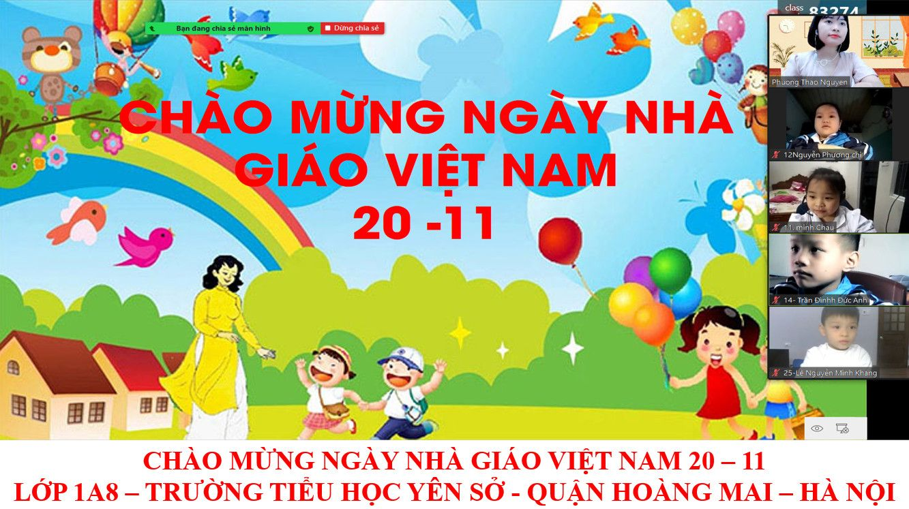
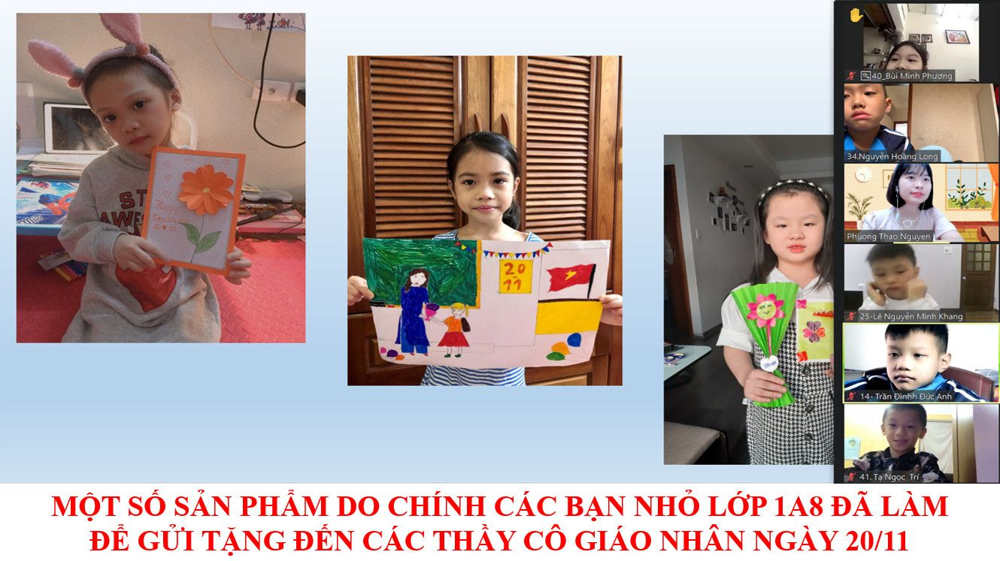
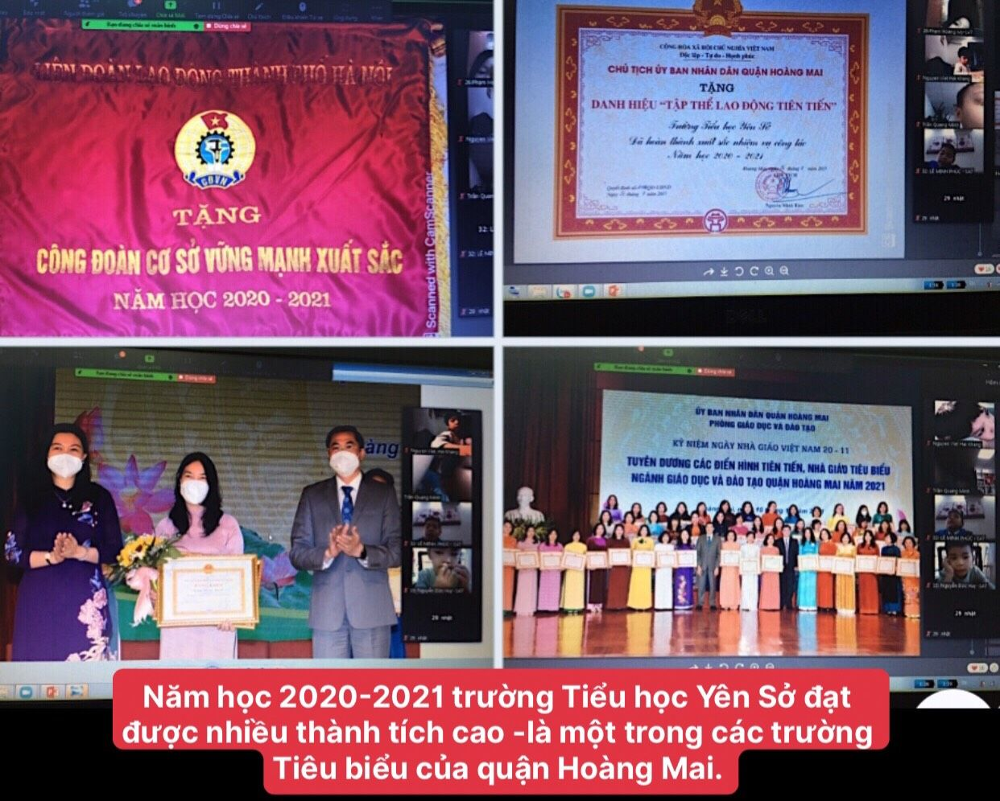

TRƯỜNG TIỂU HỌC YÊN SỞ TỔ CHỨC NHIỀU HOẠT ĐỘNG CHÀO MỪNG KỈ NIỆM 39 NĂM NGÀY NHÀ GIÁO VIỆT NAM 20/11/1982 - 20/11/2021
Tôn sư trọng đạo là truyền thống nhân văn tốt đẹp của dân ta từ ngàn đời xưa đến nay. Truyền thống ấy thể hiện rõ nét nhân văn trong ngày 20/11 hàng năm – là ngày Hiến chương các nhà giáo Việt Nam.
Hòa chung với khí thế tưng bừng, phấn khởi của ngành giáo dục cả nước kỉ niệm 39 năm ngày nhà giáo Việt Nam (20/11/1982 - 20/11/2021), trong bối cảnh cả nước đang chung tay phòng chống dịch bệnh Covid – 19, trường Tiểu học Yên Sở đã tổ chức nhiều hoạt động cho các em học sinh như: tổ chức Hội học tại các lớp, phát động các em học sinh tham gia vẽ tranh, viết lời tri ân, ca hát, trò chơi,… gửi tặng các thầy cô giáo để bày tỏ tấm lòng biết ơn sâu sắc của mình. Mặc dù tất cả các hoạt động đều được tổ chức dưới hình thức trực tuyến, nhưng đã để lại ấn tượng tốt đẹp trong lòng các em học sinh, giúp các em hiểu được công lao to lớn của các thầy cô giáo, để lại những kỉ niệm đẹp là hành trang theo các em tới suốt cuộc đời.

Tình cảm thầy trò thân thiết, gắn bó, mang nặng nghĩa tình được ghi lại qua những tấm thiệp, những bức tranh, những bài thơ, bài ca, lời chúc thật giàu hình ảnh và xúc động.

Cố thủ tướng Phạm Văn Đồng đã từng nói: “Nghề dạy học là nghề cao quý nhất trong những nghề cao quý, nghề sáng tạo nhất trong các nghề sáng tạo”. Có thể thấy xã hội đã tặng cho người thầy vinh dự lớn lao và trách nhiệm nặng nề. Chính vì thế, tập thể cán bộ, giáo viên và nhân viên nhà trường không ngừng thi đua dạy tốt, cống hiến hết mình vì sự nghiệp giáo dục và đã đạt được nhiều thành tích đáng ghi nhận. Năm học 2020 - 2021, nhà trường đã vinh dự được đón nhận Bằng khen của UBND Thành phố Hà Nội tặng danh hiệu “Đã hoàn thành xuất sắc nhiệm vụ từ năm học 2019 – 2020 đến năm học 2020 - 2021”; được UBND Quận Hoàng Mai tặng giấy khen “Tập thể lao động tiên tiến”; được Liên đoàn lao động Thành phố Hà Nội tặng cờ thi đua “Công đoàn cơ sở vững mạnh xuất sắc”; Liên đội được Thành đoàn Thành phố Hà Nội tặng bằng khen “Đã có thành tích xuất sắc trong công tác Đội và phong trào thiếu nhi Thủ đô năm học 2020 - 2021”; cô giáo Hiệu trưởng Nguyễn Thị Hồng được tặng bằng khen của UBND Thành phố Hà Nội, cô giáo Nguyễn Mai Hương được tặng giấy khen trong Hội nghị “Biểu dương các điển hình tiên tiến – Người tốt, việc tốt tiêu biểu trong công tác cứu trợ, chăm sóc và giáo dục trẻ em khuyết tật trên địa bàn Thành phố Hà Nội năm 2021”; cô giáo Phạm Thị Thanh Huyền được Thành đoàn Thành phố Hà Nội tặng bằng khen “Đã có thành tích xuất sắc trong công tác Đội và phong trào thiếu nhi Thủ đô năm học 2020 – 2021”,... Đó là sự ghi nhận của cấp trên đối với những thành tích nổi bật mà nhà trường đã đạt được trong những năm học vừa qua.

Mỗi cán bộ, giáo viên, nhân viên và mỗi em học sinh nhà trường đã, đang và sẽ bằng những hành động cụ thể, thiết thực thi đua dạy tốt, học tốt lập được nhiều thành tích trong năm học này để không phụ sự mong mỏi của các cấp lãnh đạo, các bậc phụ huynh cũng như tất cả các thầy cô giáo và các em học sinh.